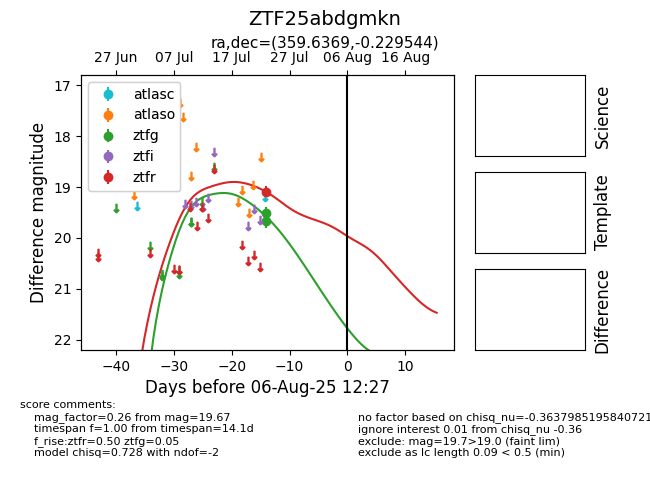

Target ZTF25abdgmkn at 2025-08-06 17:07, see:
FINK: fink-portal.org/ZTF25abdgmkn
Lasair: lasair-ztf.lsst.ac.uk/objects/ZTF25abdgmkn
ALeRCE: alerce.online/object/ZTF25abdgmkn
alt names
ZTF25abdgmkn (ztf,fink)
coordinates:
equatorial (ra, dec) = (359.6369,-0.22954)
galactic (l, b) = (95.4817,-60.25167)
photometry
last ztfg=19.67, ztfr=19.09
2 ztfg, 1 ztfr detections
